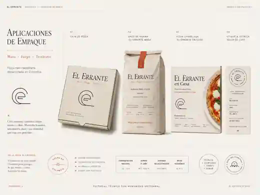

Tienda El Errante
Elige cuánto quieres participar.
Puedes comenzar desde la harina, personalizar una base, terminar una pizza completa o agregar el último gesto con nuestros productos de despensa.
Catálogo
Cuatro formas de entrar al proceso.
Cada producto explica qué hemos hecho nosotros, qué debe ocurrir en tu cocina y qué condiciones debes considerar antes de comprar.
Elige tu nivel de participación
La parte difícil cambia según tú.
Todos los caminos nacen de la misma búsqueda alrededor de la masa y el fuego, pero no exigen el mismo tiempo ni la misma experiencia.
Desde la masa
Aire y Tiempo para mezclar, fermentar, dividir, abrir y hornear desde el principio.
Para personalizar
Una base preparada por nosotros para que elijas queso, ingredientes y acabado.
Para terminar
Pizzas completas diseñadas para volver al fuego y llegar a la mesa con textura y aroma.
Para completar
Salsa de tomate y reducciones concentradas para construir o terminar una preparación.
Compra informada
Antes de agregar un producto, entiende cómo llega a tu mesa.
Las fichas presentan la participación requerida, el perfil del producto y las recomendaciones de uso. La información del empaque real prevalece para ingredientes, alérgenos, conservación, vida útil y lote.

De comprar a preparar
Cada producto se conecta con un método.
Consulta recetas, señales de cocción y herramientas antes de comenzar. Las cantidades orientan; tu horno, tu temperatura y el comportamiento del producto confirman el resultado.